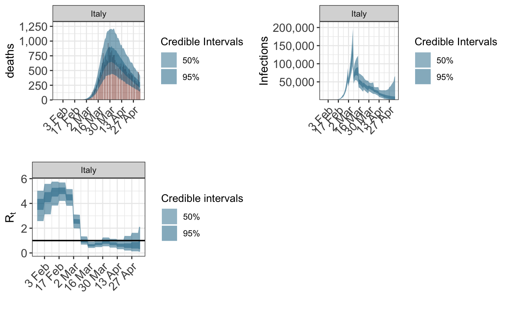
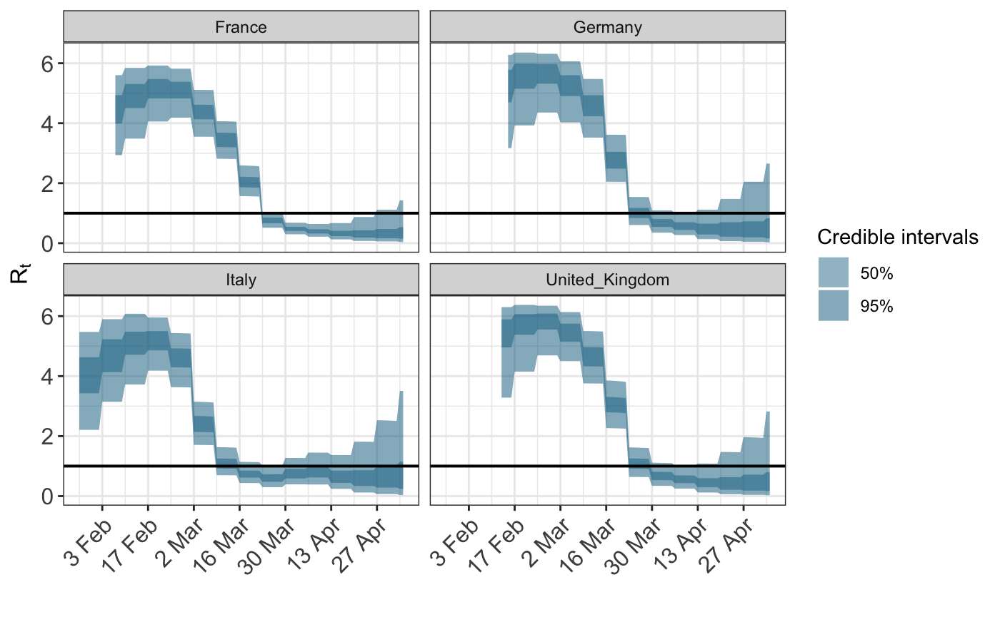
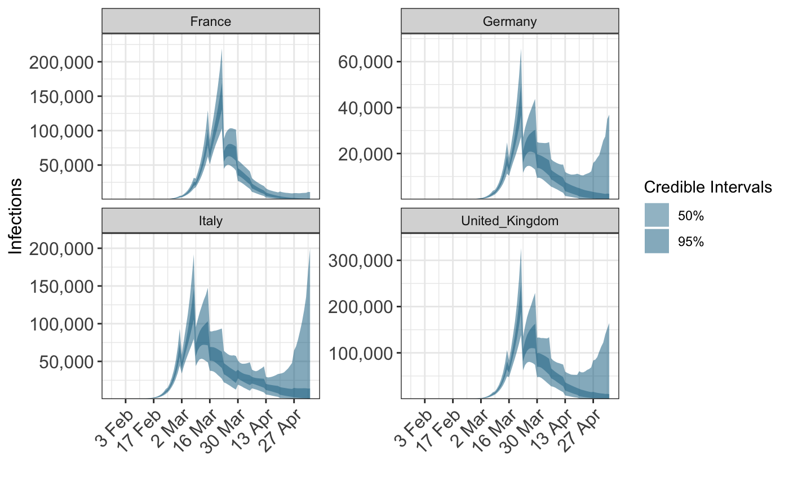
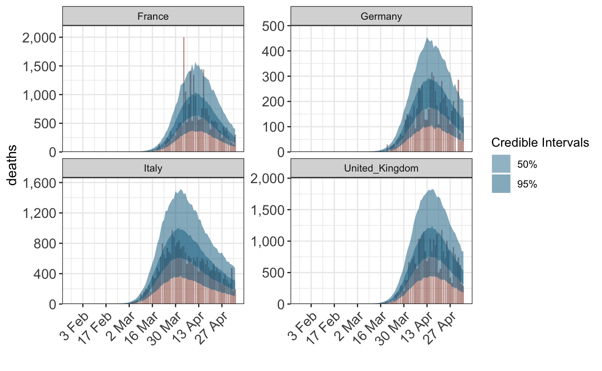
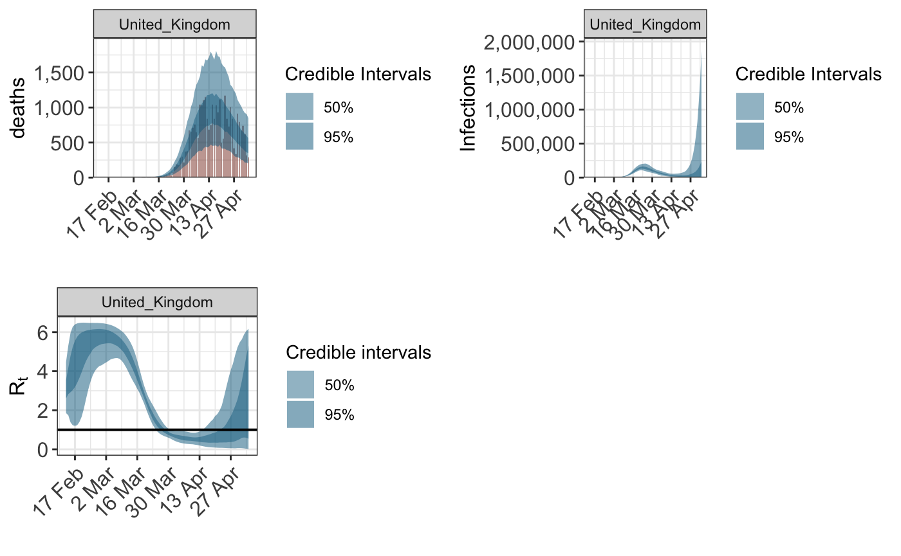

This vignette describes how changes in \(R_t\) can be modelled over time.
We use the Europe data as example.
library(epidemia) data("EuropeCovid") options(mc.cores = parallel::detectCores())
This considers a single country, modelling a weekly change in \(R_t\) as a random walk.
args <- EuropeCovid args$algorithm <- "sampling" args$sampling_args <- list(iter=600,control=list(adapt_delta=0.98,max_treedepth=15),seed=7988) args$group_subset <- c("Italy") args$data$week <- format(args$data$date, "%V") args$formula <- R(country,date) ~ 1+rw(week) fit <- do.call("epim", args)
## Warning: Bulk Effective Samples Size (ESS) is too low, indicating posterior means and medians may be unreliable.
## Running the chains for more iterations may help. See
## http://mc-stan.org/misc/warnings.html#bulk-esslibrary(gridExtra) grid.arrange(plot_obs(fit, type="deaths"),plot_infections(fit),plot_rt(fit),nrow=2)

args <- EuropeCovid args$data$week <- format(args$data$date, "%V") args$formula <- R(country,date) ~ 1+ rw(week,country) args$group_subset <- c("Germany","United_Kingdom","France","Italy") args$algorithm <- "sampling" args$sampling_args <- list(iter=600,control=list(adapt_delta=0.95,max_treedepth=15),seed=74756) fit <- do.call("epim", args)
plot_rt(fit)

plot_infections(fit)

plot_obs(fit,type="deaths")

Splines can, in principle, be used as well. For this one can simply use the functionality in the splines package, below with quadratic splines for one country..
library(splines) args <- EuropeCovid args$formula <- R(country,date) ~ bs(day,df=8,degree=3) args$group_subset <- c("United_Kingdom") args$data$day <- as.integer(args$data$date-min(args$data$date)) args$algorithm <- "sampling" args$sampling_args <- list(iter=1000,control=list(adapt_delta=0.95,max_treedepth=15),seed=1231) fit <- do.call("epim", args)
grid.arrange(plot_obs(fit, type="deaths"),plot_infections(fit),plot_rt(fit),nrow=2)
